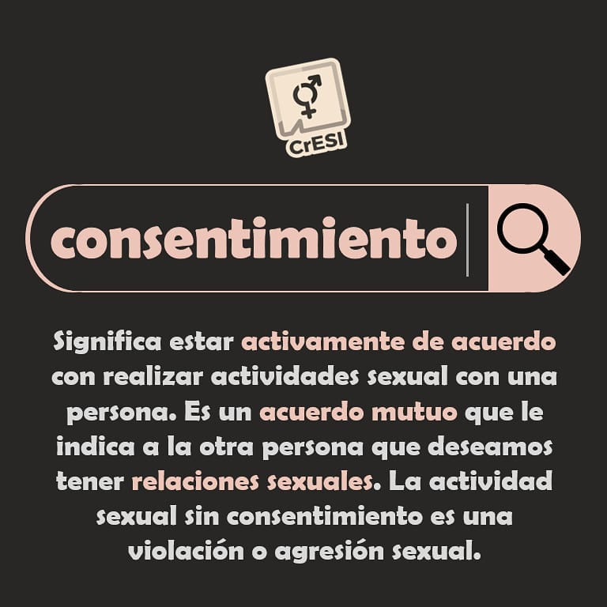
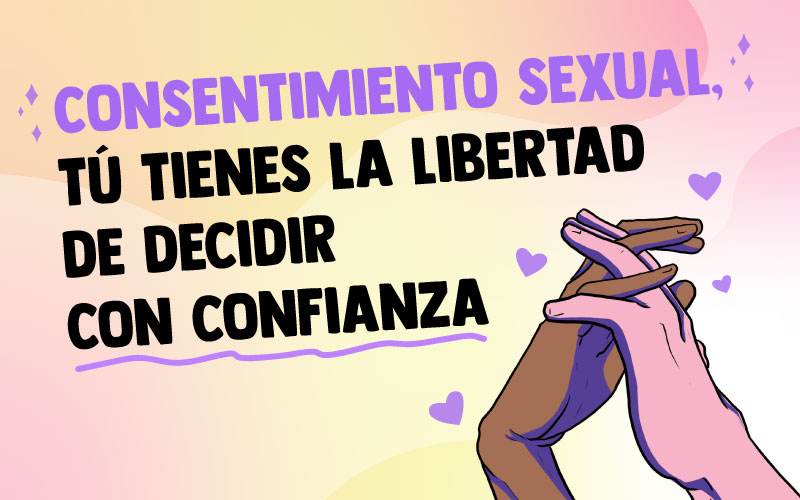

| Inicio | Concepto | Psicología | Sociedad | Prevención | Conclusiones |
El consentimiento es la manifestación de la voluntad de una persona para aceptar una determinada situación de manera libre, voluntaria e informada.
Cuando existe consentimiento, las personas pueden expresar sus decisiones sin presiones, amenazas o manipulaciones.
El consentimiento debe ser claro, consciente y respetado por todas las personas involucradas.

| Característica | Descripción |
|---|---|
| Libre | Sin presiones externas. |
| Voluntario | Nace de la propia decisión. |
| Informado | Basado en conocimiento suficiente. |
| Reversible | Puede modificarse o retirarse. |
La comunicación clara reduce malentendidos y fortalece la convivencia.
| Mito | Realidad |
|---|---|
| El silencio significa aceptación. | No. El consentimiento debe expresarse claramente. |
| Una decisión nunca puede cambiar. | Las personas pueden cambiar de opinión. |
| El consentimiento es permanente. | Debe mantenerse durante toda la interacción. |
Escuchar y respetar es tan importante como expresarse.
ONUpromueve el respeto de los derechos humanos.
Los derechos humanos constituyen una base fundamental para la convivencia.
RESPETO COMUNICACIÓN RESPONSABILIDAD EMPATÍA

El consentimiento es una expresión de autonomía personal. Comprender sus características permite desarrollar relaciones más respetuosas y responsables. Su aplicación favorece la convivencia y fortalece los valores sociales fundamentales.